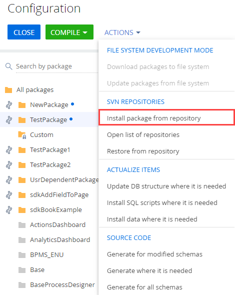
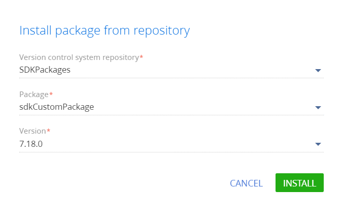
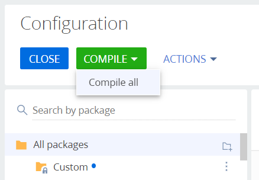
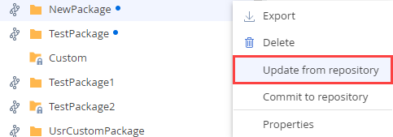
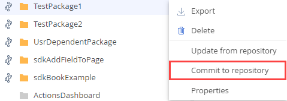
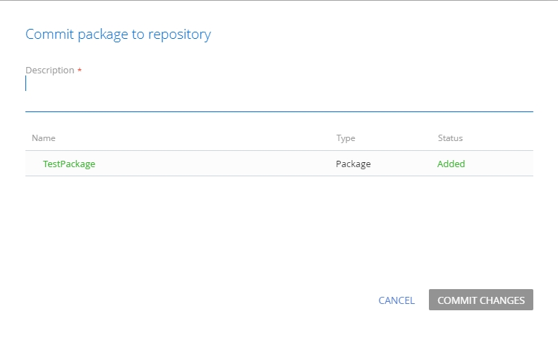

Creatio IDE предоставляет функциональность для работы с системой контроля версий SVN.
Использование встроенных средств Creatio IDE позволяет:
- Устанавливать пакет из хранилища SVN.
- Обновлять пакет из хранилища SVN.
- Фиксировать пакет в хранилище SVN.
Работать с системой контроля версий SVN встроенными средствами Creatio IDE невозможно при включенном режиме разработки в файловой системе. По умолчанию режим разработки в файловой системе отключен.
Установка пакета из хранилища SVN
Установка пакета — это процесс добавления пакета и всех его зависимостей из хранилища системы контроля версий SVN.
Устанавливать пакет необходимо в следующих случаях:
- Одновременная работа нескольких разработчиков над функциональностью пакета.
- Перенос изменений между рабочими средами.
При использовании cloud приложения для установки пакета рекомендуется обратиться в службу поддержки Creatio.
Чтобы установить пакет из хранилища SVN при использовании on-site приложения:
-
Выполните резервное копирование базы данных.
Резервное копирование базы данных необходимо выполнить, поскольку возможность возврата на предыдущую версию посредством системы контроля версий SVN не предусмотрена.
- Перейдите в раздел Конфигурация (Configuration).
- В меню действий в группе Хранилища SVN (SVN repositories) выберите Установить пакет из хранилища (Install package from repository).

- В появившемся окне выберите хранилище SVN, название и версию устанавливаемого пакета, после чего нажмите кнопку Установить (Install).

Во время установки пакета будут автоматически применены привязанные данные, а также будут установлены зависимости.
В некоторых случаях изменения могут не примениться автоматически. Если это произошло, их нужно применить вручную.
Чтобы вручную применить изменения для установленного пакета:
- Перейдите в раздел Конфигурация (Configuration).
- Сгенерируйте исходные коды для элементов, требующих генерации.
- Выполните компиляцию.
- Обновите структуру базы данных.
- При необходимости установите SQL-скрипты.
- Установите привязанные данные.
- Выполните действие Компилировать все (Compile all). Это необходимо для генерации статического контента.

При установке пользовательского пакета система проверяет его зависимости и дополнительно устанавливает либо обновляет все пакеты-зависимости текущего пакета. Например, при установке из хранилища SVN пакета sdkCustomPackage также будет установлен и пакет-зависимость sdkDependentPackage, который до этого еще не был установлен в рабочее пространство. При этом будет изменена иерархия пакетов в приложении. Если пакет sdkCustomPackage был установлен ранее, то он будет изменен.
Процесс выполнения изменений в иерархии пакетов при установке пользовательского пакета из хранилища SVN:
- Определяются зависимости устанавливаемого пакета, которые указаны в его метаданных в свойстве DependsOn.
-
Выполняется проверка установки пакетов-зависимостей в конфигурацию (если пакеты установлены, то они обновляются, если нет — устанавливаются).
-
При установке пакета устанавливаются или обновляются только те зависимости, которые установлены из системы контроля версий SVN. Не обновляются пакеты, установленные из *.zip-архивов, а также предустановленные пакеты.
Необходимо предварительно установить пакеты, от которых зависит устанавливаемый пользовательский пакет, либо его пакеты-зависимости. Установка пакета не будет выполнена, если в рабочем пространстве отсутствует какой-либо из предустановленных пакетов-зависимостей, установленных из *.zip-архивов.
Обновление пакета из хранилища SVN
Обновление пакета — это процесс загрузки в приложение изменений выбранного пакета, а также всех изменений зависимостей пакета из хранилища системы контроля версий SVN. В процессе обновления система определяет зависимости устанавливаемого пакета, которые указаны в метаданных пакета в свойстве DependsOn.
Обновлять пакет необходимо в следующих случаях:
- Одновременная работа нескольких разработчиков над функциональностью пакета.
- Перенос изменений между рабочими средами.
- Перед выполнением фиксации изменений.
Чтобы обновить пакет из хранилища SVN:
- Перейдите в раздел Конфигурация (Configuration).
- В меню пакета выберите Обновить из хранилища (Update from repository).

После этого будет запущен процесс обновления выбранного пакета и всех его пакетов-зависимостей из активных хранилищ SVN.
- Выполните действие Компилировать все (Compile all). Это необходимо для генерации статического контента.
Фиксация пакета в хранилище SVN
Фиксация пакета — это процесс сохранения внесенных в пакет изменений в хранилище системы контроля версий SVN. В хранилище SVN фиксируется только тот пакет, для которого было вызвано действие фиксации. Изменения других пакетов конфигурации при этом не фиксируются.
Фиксировать пакет необходимо в следующих случаях:
- Cоздание пользовательского пакета.
- Добавление новых конфигурационных элементов пакета.
- Изменение существующих конфигурационных элементов пакета.
- Удаление конфигурационных элементов пакета.
- Изменение свойств пакета.
Наличие репозитория отображается возле имени пакета, а при наведении курсора на значок отображается название подключенного репозитория.
Для незафиксированных пользовательских пакетов отображаются:
- Название пакета.
- Название хранилища SVN, в которое этот пакет будет зафиксирован. При этом номер ревизии пакета в хранилище SVN не указывается и будет добавлен после фиксации.
Незафиксированные пользовательские пакеты по умолчанию являются заблокированными.
Для зафиксированных пользовательских пакетов отображаются:
- Название пакета.
- Название хранилища SVN.
- Номер последней ревизии пакета в хранилище SVN.
Стиль отображения зафиксированного пользовательского пакета в неизмененном состоянии не отличается от отображения базового пакета.
Если в пользовательский пакет были внесены изменения (например, добавлены схемы или изменены его свойства), то возле его названия появляется .
Чтобы зафиксировать пакет в хранилище SVN:
- Перейдите в раздел Конфигурация (Configuration).
- В меню пакета выберите Зафиксировать в хранилище (Commit to repository).

В результате откроется окно фиксации изменений.
 - В обязательном поле Описание (Description) добавьте комментарий к фиксации пакета. В комментарии рекомендуется описать изменения пакета по сравнению с последней фиксацией. В нижней части окна отображаются изменения пакета, которые будут зафиксированы.
После нажатия на кнопку Зафиксировать изменения (Commit changes) пакет будет зафиксирован и изменения станут доступными для других пользователей системы.
При фиксации пакета в хранилище SVN снимается блокировка с пакета, а также с его конфигурационных элементов, и они становятся доступными для редактирования для других пользователей системы.